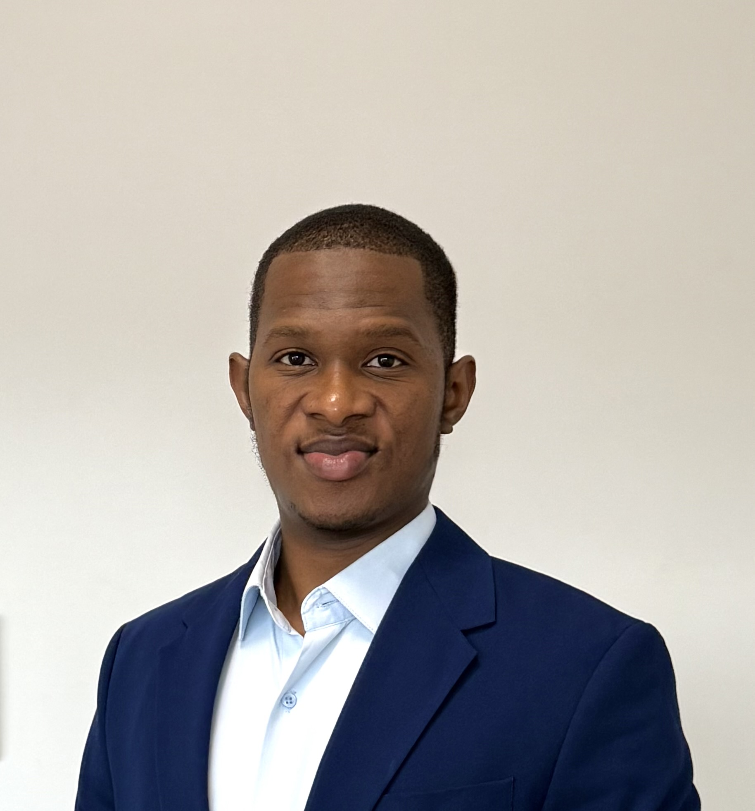

  <!-- About Section -->
  <section id="about" class="about section dark-background position-relative" style="padding: 0; background: #000;">
    <div class="container py-5 position-relative" style="z-index: 1;">
      <div class="row gy-4 justify-content-center align-items-center" style="min-height: 350px;">
        
        <div class="col-lg-4 text-center d-flex flex-column justify-content-center align-items-center" style="height:100%;">
          <div class="position-relative d-inline-block mb-3">
            
            
          </div>
          <h2 class="mt-3 mb-1 fw-bold" style="color:#fff; letter-spacing:1px;">Taoufiq OUEDRAOGO</h2>
          <p class="mb-2 fs-5" style="color:#c5c5c5;">
            <span class="typed" data-typed-items="Machine Learning, Quantitative Research"></span>
            <span class="typed-cursor typed-cursor--blink" aria-hidden="true"></span>
          </p>
        </div>

        <!-- Remove .content wrapper and apply flex directly to col-lg-8 -->
        <div class="col-lg-8 d-flex flex-column justify-content-center">
          <h3 class="fw-semibold mb-3" style="color:#6366f1;">About Me</h3>
          <p class="py-2" style="color:#fff;">
            I'm from Burkina Faso 🇧🇫 and a proud former child cadet (Ancien Enfant de Troupe - AET), which deeply shaped my values of discipline, resilience, and determination.
          </p>
          <ul class="list-unstyled mt-3">
            <li class="mb-2"><i class="bi bi-chevron-right text-primary"></i> I hold an engineering degree in Computer Science, specialized in Artificial Intelligence &amp; Big Data.</li>
            <li class="mb-2"><i class="bi bi-chevron-right text-primary"></i> I’m currently pursuing a Master’s degree in Mathematical Engineering for Finance at Université Paris 1 Panthéon-Sorbonne.</li>
            <li class="mb-2"><i class="bi bi-chevron-right text-primary"></i> My ambition is to pursue a PhD that bridges Machine Learning and Quantitative Research, contributing to innovations at the frontier of AI and Finance.</li>
          </ul>
          <blockquote class="blockquote px-3 py-2 mt-3" style="background:#23232a; border-left:4px solid #6366f1; border-radius:0.5rem;">
            <p class="mb-0 fs-6" style="color:#c4c4c4;">I consider myself resilient, highly motivated, and pragmatic. I deeply believe that every human should strive for knowledge because knowledge is what truly sets us free.</p>
          </blockquote>
        </div>

      </div>
    </div>
  </section>